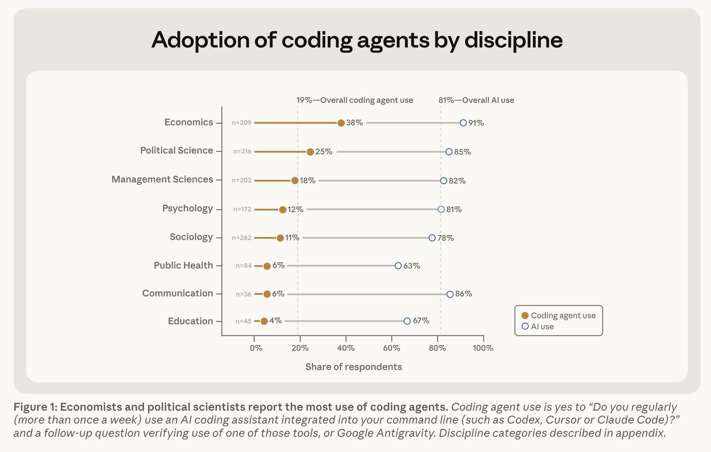
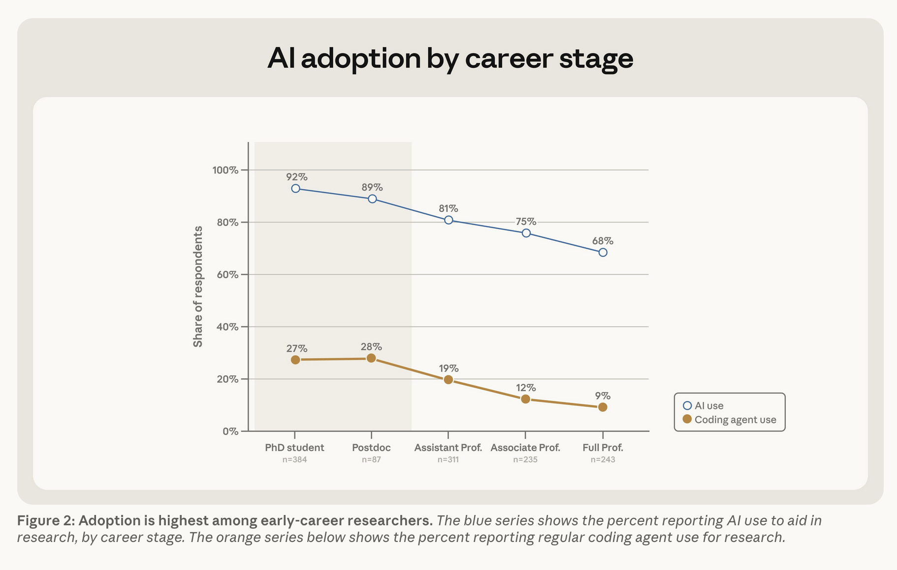
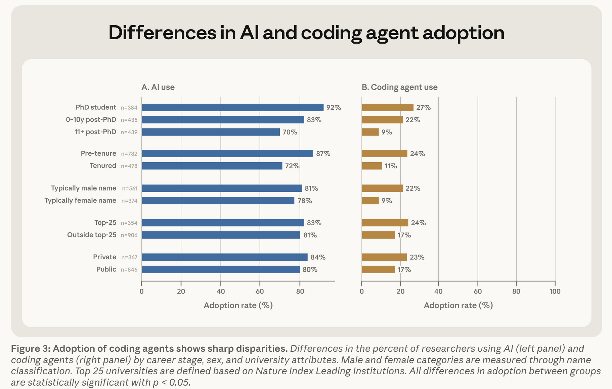

Agenda
MODULE 01
Agenda
AI as a Research Tool · University of Zürich · 2026
Institut für Politikwissenschaft · Staff Workshop · Colin Henry
Press → to begin
Why we're here
The temptation to automate
Hype cycle promises end-to-end research agents.
AI tools are mostly built for software engineers not social scientists.
Their defaults reward
speed
; our defaults (should) reward
rigor
.
This workshop is designed to put
human judgement
at the center.
Goals
Three goals for today
Recognize assumptions baked into tools.
Evaluate tools, workflows, and output.
Demand traceability, auditability, and reproducibility.
Configure and use tools practically.
Skills that transfer beyond any single model or app.
Posture
Healthy skepticism, human in the loop
Treat every output as a draft, not an answer.
The most valuable thing you bring is
judgement
.
If you can't audit a step, you can't (or shouldn't) publish it.
The adoption gap

Adoption by discipline. Source: Anthropic (2026).
The adoption gap

Adoption by career stage. Source: Anthropic (2026).
The adoption gap

Adoption by researcher and institution type. Source: Anthropic (2026).
Today
What we'll do
Framing.
ML concepts, vocabulary, applications.
Epsitemology.
Software development vs. research values.
Tour.
Models, chatbots, agents, harnesses, tools, skills, MCP.
Tasks.
Literature review · synthetic peer review · scheduled jobs.